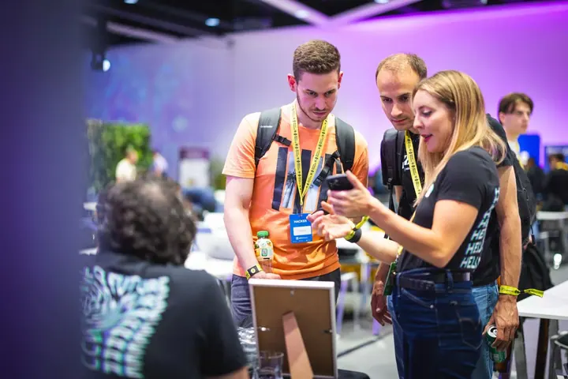

01 / 04
Eventy a firemní akce
Fotím firemní akce, konference, večírky a galavečeře, ale i sportovní akce, třeba golfový turnaj. Nafotím vaši událost tak, aby na sociálních sítích bylo vidět, že šlo o nejlepší akci roku.
Zeptat se na termín→


Fotky z akcí, ze kterých dýchá atmosféra
Zeptat se na termín →(01) Ahoj
Jmenuji se Michal Tvrdík a jsem event fotograf z Prahy . Fotím konference, firemní večírky i galavečeře a stejně rád nafotím business portréty, interiéry nebo produkty . Snažím se nerušit, ale přitom zachytit všechno důležité.
(02) Co fotím
01 / 04
Fotím firemní akce, konference, večírky a galavečeře, ale i sportovní akce, třeba golfový turnaj. Nafotím vaši událost tak, aby na sociálních sítích bylo vidět, že šlo o nejlepší akci roku.
Zeptat se na termín→02 / 04
Portréty na LinkedIn, nová profilovka nebo rodinné foto na zeď. Fotím v exteriéru, v ateliéru, a když nemáte čas nikam jet, přijedu s mobilním ateliérem až k vám.
Zeptat se na termín→03 / 04
Pro realitní kanceláře, hotely, architekty i jednotlivce fotím interiéry a exteriéry. Fotky jsou prosvětlené, barevně korektní a mají čistou kompozici.
Zeptat se na termín→Dále nabízím
Se značkami a agenturami tvořím fotky pro sociální sítě, e-shopy i marketing. Produkty rád zasazuji do jejich přirozeného prostředí, aby nepůsobily strojeně.
↗(03) Portfolio
Kliknutím fotku zvětšíte · fotografie jsou ilustrační
(04) Postup
Od první zprávy po hotovou galerii.
Krok 1 z 4
Napište mi co nejvíc detailů o akci, ideálně rovnou i s harmonogramem. Odpovídám zpravidla do 24 hodin.
Krok 2 z 4
Podle rozsahu akce, místa, počtu fotek a rychlosti dodání vám připravím přesnou nabídku.
Krok 3 z 4
Na akci pracuji nenápadně, abych nerušil program, a přitom hlídám všechno důležité od řečníků po atmosféru v sále.
Krok 4 z 4
Vyberu nejlepší záběry, upravím je a pošlu vám je. Když spěcháte, domluvíme se na expresním dodání.
Aby bylo vidět, že váš event byl nejlepší akcí roku

(05) Za objektivem
Fotografií žiju hlavně v Praze, ať už v ulicích, před oltářem, na eventech nebo mezi zdmi interiérů. Focením se živím od roku 2012 a za tu dobu jsem nasbíral tolik zkušeností, že mě na place málokdy něco rozhodí.
Moji klienti jsou nejčastěji firmy, pro které fotím eventy a business portréty, ale také interiéry nebo jejich produkty. Jsem perfekcionista a dávám přednost kvalitě před kvantitou. Každý snímek vzniká s důrazem na atmosféru, detail a příběh.
Nemám rád jednotvárnost, a tak si sem tam odskočím i na párové focení, svatbu nebo focení dětí. Do fotek se snažím dostat příběh a emoce a mám radost, když je z nich pak cítíte vy nebo vaši klienti.
Michal
Michal Tvrdík · Event a komerční fotograf
Minimální rozsah zakázky jsou 3 hodiny focení. Cena za první 3 hodiny začíná na 1 750 Kč za hodinu, každá další hodina je levnější.
Ano, fotím po celé České republice i v zahraničí. Doprava se počítá 8 Kč za kilometr a čas na cestě mimo Prahu 250 Kč za hodinu.
Ano, přijedu s mobilním ateliérem až k vám, takže se nemusíte o nic starat. Focení s mobilním ateliérem stojí 5 000 Kč.
Ano, svatby fotím v Praze, po celé ČR i v zahraničí. Balíčky začínají na 8 000 Kč za 3 hodiny focení, online galerii posílám do 4 až 6 týdnů.
(07) Kontakt
Napište pár vět o tom, co si představujete, a termín, který se vám hodí.